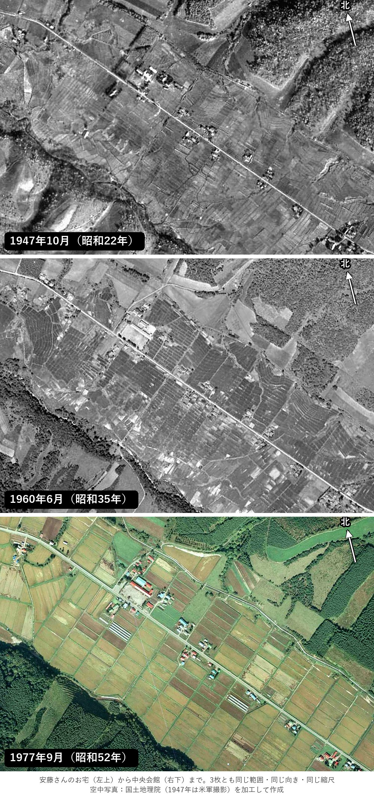

置杵牛 開拓120周年 記念誌
「インフラの歩み」の水田の写真
ふんどし沢の水田の大型化（1966〜1974年）の前と後です。横100mm×縦68mm・400dpiで、安藤さんのお宅が左上、中央会館が右下、道路が対角線になる向きにしました。1947年・1960年・1977年の3枚で、どれも同じ範囲・同じ向き・同じ縮尺です。
このページは公開していません。どこからもリンクしておらず、検索にも出ません。記念誌ができましたら削除します。

3枚の見比べ（画面で見る用）
上から1947年・1960年・1977年。右上の矢印が北です。
1947年10月17日（昭和22年）・白黒・米軍撮影
いちばん古い写真です。10月の朝に撮られたため、山の影が長く写っています。


使い方
- 「そのまま」と「北の矢印入り」は1575×1071画素・400dpi（100×68mm）です。100%で置けば、そのままの大きさになります。
- 「広め」は、同じ縮尺のまま範囲を縦横1.2倍にした版です（1890×1285画素・120×82mm）。位置を少し動かしたいときにお使いください。
- 北は、画面の上から左へ約14度の向きです（「北の矢印入り」の右上）。
- 3枚は地図に合わせてあり、道路の位置の差は5m程度です。並べても重ねても使えます。
- 1947年と1960年は元の写真の縮尺（約3万分の1）が1977年（1万5千分の1）の半分ほどなので、少しやわらかい画になります。
- 山の斜面は、撮影した位置の違いで、年によって形が少し違って見えます。
出典（写真を載せたページに）
- 1947年：米軍撮影の空中写真（1947年撮影、国土地理院 地図・空中写真閲覧サービス）を加工して作成
- 1960年：国土地理院撮影の空中写真（1960年撮影）を加工して作成
- 1977年：国土地理院撮影の空中写真（1977年撮影）を加工して作成
地図・空中写真閲覧サービスでダウンロードした空中写真は、出典を書くだけで、申請なしに刊行物に使えます（国土地理院「承認申請Q&A」Q1-20）。出典は原則として写真を載せたページに書き、巻末にまとめる場合は、何ページの写真かを添えます。
写真さがし（11/5）

最初の見本（地図用の写真から作ったもの）
右の下の方に、撮影日の違う写真の継ぎ目（茶色の部分）があります。上の3枚は1枚の写真から作ったので、継ぎ目はありません。
安藤さんのお宅から会館のあたりが写っている写真です（国土地理院「地図・空中写真閲覧サービス」）。リンクを押すと、地理院のサイトでその年の写真を探した画面が開きます（最初に注意事項への同意を求められます）。
| 撮影 | 種類 | ようす |
|---|---|---|
| 1947年〜1955年 | 白黒 | 米軍の撮影。工事のずっと前。地理院で見る |
| 1960年6月 1963年6月 | 白黒 | 工事の前。小さな田んぼ。地理院で見る |
| 1967年7月 1972年 | 白黒 | 工事のとちゅう。地理院で見る |
| 1977年9月25日 | カラー | 工事の直後。黄色く実った稲の大きな田んぼ（昭和52年）。地理院で見る |
| 1999年9月 2001年8月 | 白黒 | 平成。2001年は縮尺が小さく、やや粗め。地理院で見る |
| 2009年10月25日 | カラー | 平成。稲刈りのあとで、田んぼは茶色。地理院で見る |
11/6 訂正：最初の一覧では米軍の写真（1947〜1955年）が抜けていました。